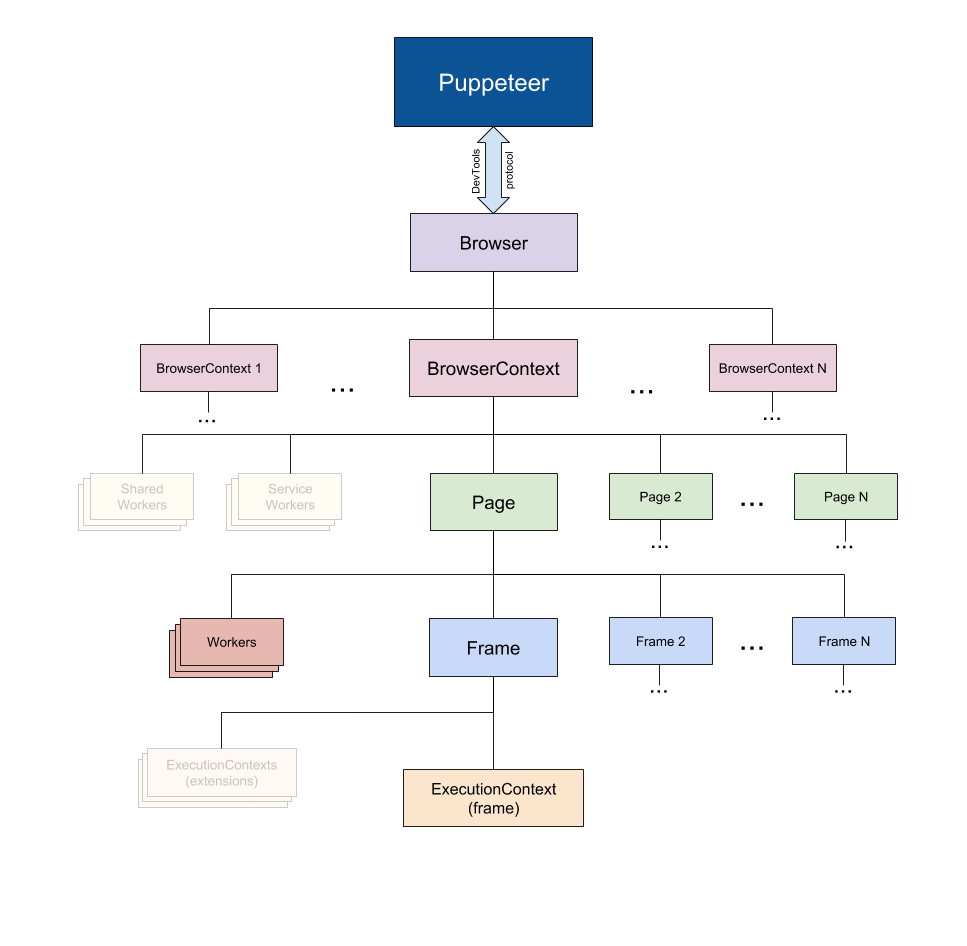
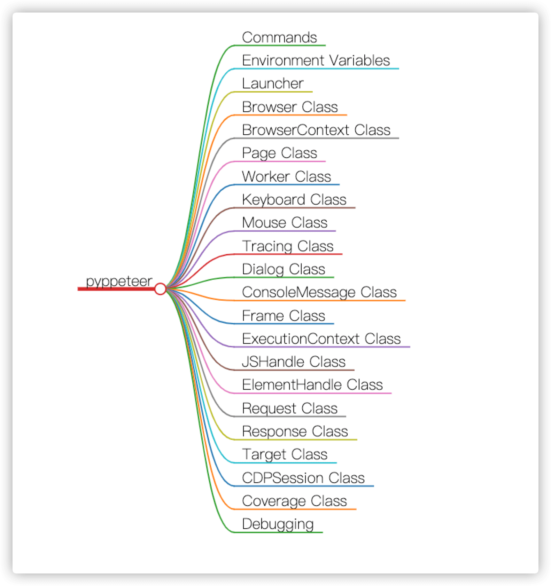
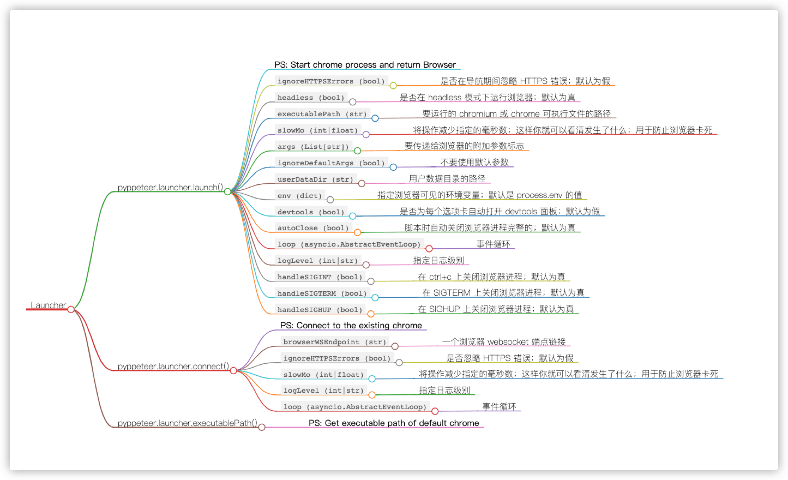
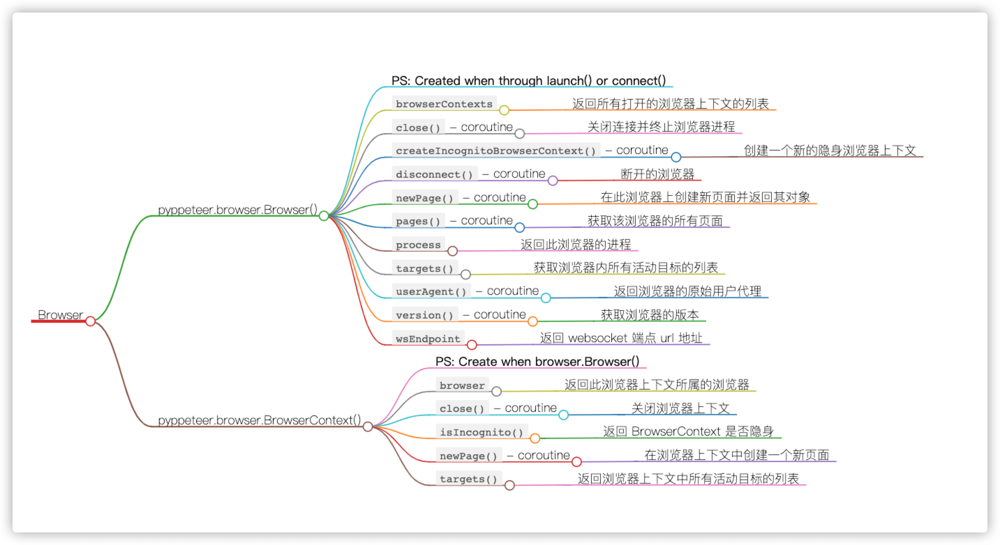
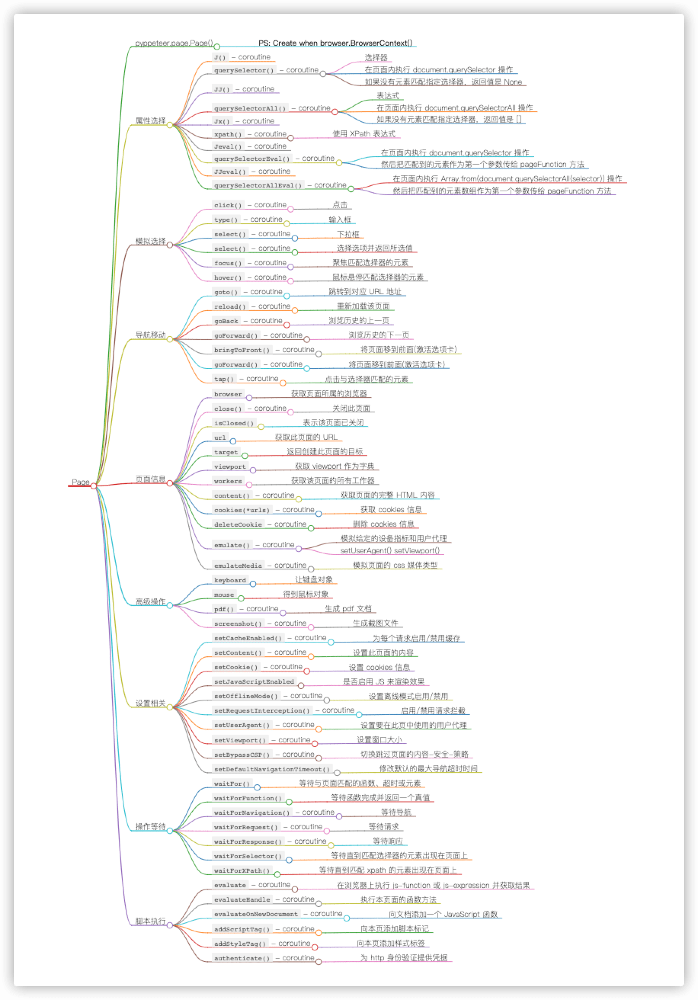

Pyppetter - 你的自动化利器！
Pyppetter 就是类似于在谷歌浏览器中执行动作的时候，进行的网页渲染，就是依赖在 Chromium 浏览器中执行的，不需要繁琐的环境配置，就可以支持各种异步操作，能够大大提高我们的工作效率。
1. 软件介绍
Headless chrome/chromium automation library
在 Pyppetter 中，实际上它背后也是有一个类似 Chrome 浏览器的 Chromium 浏览器在执行一些动作进行网页渲染。
- 基础功能
- 生成页面的截图和
PDF - 自动提交表单，
UI测试，键盘输入
- 生成页面的截图和
- 高级功能
JS注入- 模拟操作
- 异步执行
- 用户伪装
Puppeteer 是谷歌官方出品的一个通过 DevTools 协议控制 headless Chrome 的 NodeJS 库。可以通过 Puppeteer 的提供的 api 直接控制 Chrome 模拟大部分用户操作来进行 UI Test 或者作为爬虫访问页面来收集数据。
Puppeteer使用DevTools协议与浏览器进行通信。Browser实例可以拥有浏览器上下文。BrowserContext实例定义了一个浏览会话并可拥有多个页面。Page至少有一个框架：主框架。frame至少有一个执行上下文 - 默认的执行上下文 - 框架的JavaScript被执行。Worker具有单一执行上下文，并且便于与WebWorkers进行交互。

2. 安装方式
Pyppeteer requires Python >= 3.6
# Install with pip from PyPI
$ pip install pyppeteer
# Install the latest version from this github repo
$ pip install -U git+https://github.com/pyppeteer/pyppeteer@dev
3. 接口汇总
介绍常见接口的使用说明和对应含义解释！
- [1] Pyppeteer

- [2] Launcher Class
- 启动浏览器只需要调用
launch方法 - 返回类型是
browser模块中的Browser浏览器对象 - 这是一个
async修饰的方法，所以调用它的时候需要使用await关键字
- 启动浏览器只需要调用
pyppeteer.launcher.launch(options: dict = None, **kwargs) → pyppeteer.browser.Browser

- [3] Browser Class
browser = await launch()- 通常将其赋值给
browser变量，其实它就是Browser类的一个实例 - 浏览器
browser示例作为一个对象，其自然有很多用于操作浏览器本身的方法
class pyppeteer.browser.Browser(
connection: pyppeteer.connection.Connection,
contextIds: List[str],
ignoreHTTPSErrors: bool,
setDefaultViewport: bool,
process: Optional[subprocess.Popen] = None,
closeCallback: Callable[[],
Awaitable[None]] = None, **kwargs)

- [4] Page Class
page = await browser.newPage()Page即页面，就对应一个网页，一个选项卡

# 模拟鼠标右键点击一下
import asyncio
from pyppeteer import launch
from pyquery import PyQuery as pq
async def main():
browser = await launch(headless=False)
page = await browser.newPage()
await page.goto('https://dynamic2.scrape.cuiqingcai.com/')
await page.waitForSelector('.item .name')
await page.click('.item .name', options={
'button': 'right',
'clickCount': 1, # 1 or 2
'delay': 3000, # 毫秒
})
await browser.close()
asyncio.get_event_loop().run_until_complete(main())
# 页面输入文本
import asyncio
from pyppeteer import launch
from pyquery import PyQuery as pq
async def main():
browser = await launch(headless=False)
page = await browser.newPage()
await page.goto('https://www.taobao.com')
await page.type('#q', 'iPad')
await asyncio.sleep(10)
await browser.close()
asyncio.get_event_loop().run_until_complete(main())
# 执行JS代码
import asyncio
from pyppeteer import launch
width, height = 1366, 768
async def main():
browser = await launch()
page = await browser.newPage()
await page.setViewport({'width': width, 'height': height})
await page.goto('https://dynamic2.scrape.cuiqingcai.com/')
await page.waitForSelector('.item .name')
await asyncio.sleep(2)
await page.screenshot(path='example.png')
dimensions = await page.evaluate('''() => {
return {
width: document.documentElement.clientWidth,
height: document.documentElement.clientHeight,
deviceScaleFactor: window.devicePixelRatio,
}
}''')
print(dimensions)
await browser.close()
asyncio.get_event_loop().run_until_complete(main())
4. 选择器
可以参考 CSS Selector Reference 来查看示例样例来学习和理解！
简单选择器 - [1] 通配选择器
- 说明：选择全局的所有元素
- 示例：
*
简单选择器 - [2] 标签选择器
- 说明：依据元素在其位置的上下文关系来定义样式
- 示例：
li - 示例：
p:empty- 选择每个 p 元素且没有子节点的 - 示例：
p:first-child- 选择父节点的第一个 p 元素 - 示例：
p::first-letter- 选择每个 p 元素的首字母 - 示例：
p::first-line- 选择每个 p 元素的第一行
简单选择器 - [3] ID 选择器
- 说明：
ID选择器以"#"来定义 - 示例：
.pclass a
- 说明：
简单选择器 - [4] 类选择器
- 说明：类选择器以一个
"."显示 - 示例：
#pid a
- 说明：类选择器以一个
高级选择器 - [1] 属性选择器
- 说明：类选择器以一个
"."显示 - 示例：
input[disabled] - 示例：
input[type="password"]- 等于 - 示例：
[for~="height"]- 包含 - 示例：
a[href*="w3schools"]- 包含 - 示例：
a[href^="#"]- 以开头 - 示例：
a[href$="home"]- 以结尾 - 示例：
[class^="icon-"], [class*=" icon-"]
- 说明：类选择器以一个
高级选择器 - [2] 伪类选择器
- 说明：这个选择器我们在使用的过程中基本不会用到
- 示例：
a:link {...} - 示例：
a:visited {...} - 示例：
a:hover {...} - 示例：
a:active {...} - 示例：
a:focus {...}
高级选择器 - [3] 选择器组合
- 说明：即可以将多种选择器进行组合来筛选元素
- 示例：
直接组合 EFE[foo="bar"]E#myid#myid.warning.warning[foo="bar"].name1.name2- 同时设置两个属性的元素
- 示例：
后代组合 E Farticle pli strong.name1 .name2
- 示例：
亲子组合 E>Farticle > p
- 示例：
相邻兄弟 E+Fli + li
5. 参考示例
下面，是官方仓库中提及的两个自动化操作的示例代码！
- [1] 打开网页并截屏
import asyncio
from pyppeteer import launch
async def main():
# 启动浏览器; 创建一个浏览器对象
browser = await launch()
# 新建一个选项卡; 新建一个页面对象
page = await browser.newPage()
# 浏览器页面跳转
await page.goto('https://example.com')
# 页面成功加载; 等待节点元素加载
await page.waitForSelector('.item .name')
await page.screenshot({'path': 'example.png'})
await browser.close()
# 创建异步池并执行异步模块main函数
asyncio.get_event_loop().run_until_complete(main())
- [2] 页面上的执行 JS 代码
import asyncio
from pyppeteer import launch
async def main():
browser = await launch()
page = await browser.newPage()
await page.goto('https://example.com')
await page.screenshot({'path': 'example.png'})
dimensions = await page.evaluate('''() => {
return {
width: document.documentElement.clientWidth,
height: document.documentElement.clientHeight,
deviceScaleFactor: window.devicePixelRatio,
}
}''')
print(dimensions)
await browser.close()
asyncio.get_event_loop().run_until_complete(main())
6. 注意事项
软件使用过程中需要注意的一些细节和要点！
- [1] 元素选择器方法名称
| puppeteer | pyppeteer | pyppeteer shorthand |
|---|---|---|
Page.$() |
Page.querySelector() |
Page.J() |
Page.$$() |
Page.querySelectorAll() |
Page.JJ() |
Page.$x() |
Page.xpath() |
Page.Jx() |
- [2] 执行代码的方式
# get a page's textContent
content = await page.evaluate('document.body.textContent', force_expr=True)
# get an element's textContent
element = await page.querySelector('h1')
title = await page.evaluate('(element) => element.textContent', element)
7. 问题处理
介绍使用 Pyppeteer 库的过程中，遇到的一些问题及其解决方案！
7.1 同步异步执行
- asyncio 同步执行 pyppeteer
async def url_get_data(funds_list):
browser = await launch()
page = await browser.newPage()
for fund in funds_list:
url = 'http://fund.eastmoney.com/f10/jjjz_' + str(fund) + '.html'
await page.goto(url)
html = await page.content()
print(get_data(html))
await browser.close()
asyncio.get_event_loop().run_until_complete(url_get_data())
- asyncio 异步执行 pyppeteer
async def create_page():
browser = await launch(headless=True)
page = await browser.newPage()
return browser, page
async def close_page():
await browser.close()
async def url_get_data(page, fund):
url = 'http://fund.eastmoney.com/f10/jjjz_' + str(fund) + '.html'
await page.goto(url)
html = await page.content()
print(get_data(html))
loop = asyncio.get_event_loop()
browser, page = loop.run_until_complete(create_page())
tasks = [ asyncio.ensure_future(url_get_data(page, fund)) for fund in funds_list ]
loop.run_until_complete(asyncio.wait(tasks))
loop.run_until_complete(close_page())
7.2 防止网站检测
async def main():
browser = await launch(headless=False)
page = await browser.newPage()
await page.goto('https://login.taobao.com/member/login.jhtml?redirectURL=https://www.taobao.com/')
# 防止网站检测: js为设置webdriver的值
await page.evaluateOnNewDocument('() =>{ Object.defineProperties(navigator,' '{ webdriver:{ get: () => false } }) }')
await asyncio.sleep(100)
7.3 保持用户记录
async def main():
browser = await launch(headless=False, userDataDir='./userdata')
page = await browser.newPage()
await page.goto('https://www.taobao.com')
await asyncio.sleep(100)
7.4 创建隐身模式
browser = await launch()
context = await browser.createIncognitoBrowserContext()
page = await context.newPage()
await page.goto('https://example.com')
7.5 登录出现滑块
import asyncio
from pyppeteer import launch
async def main():
browser = await launch({'headless': False})
page = await browser.newPage()
await page.setViewport({'width': 1920, 'height': 1080})
await page.goto('https://login.taobao.com/member/login.jhtml')
await page.evaluateOnNewDocument('() =>{ Object.defineProperties(navigator,' '{ webdriver:{ get: () => false } }) }')
await page.waitForSelector('#J_QRCodeLogin > div.login-links > a.forget-pwd.J_Quick2Static', {'timeout': 3000})
await page.click('#J_QRCodeLogin > div.login-links > a.forget-pwd.J_Quick2Static')
await page.type('#TPL_username_1', '') # 账号
await page.type('#TPL_password_1', '') # 密码
await asyncio.sleep(5)
# 是否有滑块
slider = await page.Jeval('#nocaptcha', 'node => node.style')
if slider:
print('出现滑块')
await page.click('#J_SubmitStatic')
await asyncio.sleep(5)
cookie = await page.cookies()
print(cookie)
await browser.close()
asyncio.get_event_loop().run_until_complete(main())
8. 使用技巧
介绍使用 Pyppeteer 库的时候，使用上面的一些小技巧！
- 下载安装浏览器
# 下载并安装
$ pyppeteer-install
- 请求返回状态信息
res = await page.goto('https://www.toutiao.com/', options={'timeout': 1000})
resp_headers = res.headers # 响应头
resp_status = res.status # 响应状态
resp_url = res.url # 请求地址
resp_ok = res.ok # 响应状态码
- 网页截图技巧
# 可以保存为png和jpeg格式
await page.screenshot({path: './login.png'})
await page.screenshot({path: './login.jpeg'})
# 指定文件的压缩质量; 从0~100不等
await page.screenshot({'path': './login.png', 'quality': 100})
# 页面滚动截图
await page.screenshot({'path': './login.png', 'fullPage': True})
# 页面元素截图
page = await browser.newPage()
await page.goto(url)
logo = await page.waitForSelector('#lg')
await logo.screenshot({path: 'login.png'})
- 滚动到页面底部
await page.evaluate('window.scrollBy(0, document.body.scrollHeight)')
- 获取标签属性
# 获取a标签
title_elements = await page.Jx('//*[@class="result c-container "]/h3/a')
for item in title_elements:
# 获取文本：方法一，通过getProperty方法获取
title_str1 = await (await item.getProperty('textContent')).jsonValue()
print(title_str1)
# 获取文本：方法二，通过evaluate方法获取
title_str2 = await page.evaluate('item => item.textContent', item)
print(title_str2)
# 获取链接：通过getProperty方法获取
title_link = await (await item.getProperty('href')).jsonValue()
9. 参考链接
送人玫瑰，手有余香！